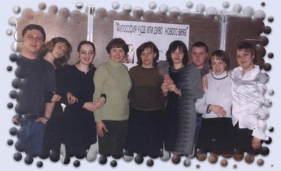

|
На 4-ом курсе физико-математического факультета состоялся открытый кураторский час, который подготовила и провела доцент кафедры математического анализа и элементарной математики
Дворяткина Светлана Николаевна. Тема занятия -
"Философия чуда или диво нового века".

ПРЕЛЮДИЯ
(музыкальная заставка)
Когда-то давным-давно, когда мир был еще юн, и день, и ночь, и небо, и земля, и воздух, и вода - все было прекрасно, но чего-то недоставало в этом мире, чего-то или кого-то, человека, который был бы так прекрасен как сама природа, голос, которого был бы нежнее и тоньше чем у самой экзотической птицы.
И вот однажды ночью звезды в небе создали силуэт юноши. Природа дала ему плоть и кровь, ветер - голос, вода - легкость и пластичность. Птицы украсили его голову венком из нежных цветов. Гром, молния, ветер, стихия оживила его. Стихия дала ему силу и энергию к жизни. И вот он, созданный и оживленный природой, сходит со своего небесного пьедестала. Он ступает на грешную землю, и все вокруг будто сияет, чувствуя его шаги.
Он прекрасен. Он идет тихо, почти не слышно. Нет! Он не идет, он летит. Голова его украшена цветами из райских садов. Волосы, слегка спадающие на лоб, развеваются по ветру. Его голос, нет! Это не человеческий голос. Это голос ветра, это голос моря, это голос девственной природы. Имя ему дали птицы "ВИТАС". "ВИ-ТА-СС" кричали они, "ВИТАС" разносило эхо повсюду. Витас- сын природы, сын стихии, сын морей, сын неба и брат звезд. Витас - это душа вселенной, голос невиданных морей.
Витас - самый загадочный персонаж отечественной эстрады. Что только о нем ни говорят: что он - телепат и экстрасенс, умеет управлять частотой собственного пульса, спит, как Майкл Джексон, в барокамере, что он - не мужчина, как, впрочем, и не женщина, что он вообще не человек, что ему сделана операция на горле с вживлением динамиков, что вместо легких у него жабры и бог знает что еще. Но вот беда - певец не дает интервью, это его позиция.
"Я могу писать музыку, петь, но я совершенно не умею вести себя с журналистами - говорит Витас. -Так, что интриг нет, идет работа над собой."
Певец молчит, журналисты рыщут, легенды куются, слава растет. Закон шоу-бизнеса.
И все же, если бы не злобные журналисты, так никто бы и не знал, что Витас - не просто Витас, а Виталий Грачев, который родился в городе Даугавпилсе 19 февраля 1981 года. Закончил музыкальную школу по классу аккордеона. Папа Витаса, мидовский работник среднего звена, живет в Одессе, а мама Лидия Михайловна умерла около года назад. К ней Витас был очень привязан. Именно ей посвящена песня "Дождь в Тбилиси". Еще известно, что у Витаса есть дедушка-аккордеонист, который и разглядел таланты внука и стал вместе с ним выступать на разных культмассовых мероприятиях. Впервые на сцену даугавпилского Театра музыкальной комедии Виталик вышел в восемь лет "с пластическим номером, пародией на Майкла Джексона, зал сильно веселился".
Два года назад московский продюсер Сергей Пудовкин, увидел юное дарование на сцене одесского Театра пластики и сразу понял, что перед ним "артист с большой буквы".
Чтобы начать с ним работу, Сергей заложил свою квартиру на Смоленке и взял кредит. Первые же деньги Витас заработал на фестивале "Жемчужина Юга": "Я исполнил танцевальную пародию на песню группы "На-На" "Где ты была" и получил приз -двухместную надувную лодку. Покатался недолго. Продал ее и записал "Оперу №2". Затем переезд в Москву. Альбом. Клип. Первое появление перед широкой аудиторией на "Рождественских встречах" в прошлом году". Вспоминает продюсер: - В зале сидело человек триста. Артисты, задействованные в постановке, - Пресняков, Киркоров, Расторгуев, "Иванушки" - и весь обслуживающий персонал. Шло собрание перед началом съемок. Так называемая "сводная репетиция". У Аллы Борисовны есть традиция - перед началом концерта она представляет каждого артиста присутствующим. Называет его имя, а он встает и говорит "Я". Это для того, чтобы новичков по случайности не приняли за техников-смотрителей.
Вот и на этот раз началась перекличка. "Филипп Киркоров".- "Я". "Коля Расторгуев-". - "Я". "Шао-Бао". - "Мы". "Отпетые мошенники".-"Мы".-"Витас"... Он встает. "Ну что, ты на самом деле так высоко можешь петь?" - "Да". - "А слабо сейчас спеть?" Наступила гробовая тишина. Мне стало страшно. Мы только что с мороза, а ему перед концертом минимум час розогреваться. Не объяснишь, что не было времени. Я понял - вот он, момент истины. Или на коне, или под конём. И тут Витас взял головокружительно высокую ноту, которую до этого, как выяснилось, не брал даже на сцене. И держал больше минуты. Пугачева сама его прервала: "Хватит-хватит, я сейчас помру!". У Витаса и правда феноменальной силы голос. На всех концертах он поет Ave Maria без микрофона, не говоря уже про "Оперу № 2" - самую первую его песню, которую он написал в 14 лет и которая принесла ему известность.
- Я никак не мог придумать, как подать эту песню, чтобы она сразу запомнилась, нужна была какая-то фишка. Я упорно экспериментировал. Озарение снизошло дома, в три часа ночи. Родители в восторге не были из-за шума, - вспоминает Витас.
ОПЕРА №2
(музыкальная заставка)
Мелодии у Витаса рождаются постоянно. По 10-15 штук в день, но песнями становятся единицы. Потому как "нужна полная гармония музыки и текста". Слова, как правило, появляются вслед за музыкой. Один раз он сочинил песню прямо во время концерта и назвал ее "Подожди немного, я найду дорогу". "А я увидел девушку в зале, ее глаза, и как-то сразу ощутил ее эмоции, ее состояние, все и родилось".
Помимо певческой карьеры у Витаса немало творческих планов, что, учитывая его молодой возраст, вполне объяснимо. Из всех искусств на свете певец предпочитает кино. В настоящее время снимается в телесериале по книге Донцовой, где исполняет главную роль. Витасом заинтересовался еще и театр. В сентябре должен выйти спектакль "Гамлет" в постановке Андрея Жолдака, где Витасу планируют отдать роль самого принца Датского. (Андрей Жолдак - театральный режиссер, открытие московской Театральной олимпиады, где он показал спектакль "Чайка") Хотя репетиции идут полным ходом, пение остается главным занятием Витаса. Он занимается вокалом с преподавателем семь дней в неделю по три часа. Педагога зовут Хосе. Он приехал из Америки, живет в Москве, а работает в Лондоне. Для нашего певца он представляет собой этакий кладезь знаний о том, что такое вокал и как им пользоваться. Витаса на сегодняшний день не слышал разве что только глухой. Но загадку использования певцом его вокальных данных продюсер, да и его подопечный, ревниво охраняют до сих пор. Хотя у некоторых экспертов на этот счет есть разные мнения. Одни уверены, что для достижения эффекта Витас якобы умеет зажимать особым способом голосовые связки. Или что он сделал для этого особую операцию. Другие уверяют, что это просто компьютерный эффект. Словом, тайна сия велика.
Витас поистине неземного происхождения человек. Пудовкин уверяет, что его подопечный может приказать собственному сердцу перестать биться, что, собственно, однажды и продемонстрировал ему перед концертом: "Если научишься достигать состояния свободного падения - сможешь контролировать свое сердце".
- Я тогда здорово испугался, - говорит Сергей. - Пора идти на сцену, а тут такое. Я крикнул: "Давай включай все назад и больше так не делай".
Витас страстный поклонник Востока. В песне "Седьмой элемент" он использовал какую-то особую мантру на счастье, поэтому на слушателя она оказывает благотворное воздействие, и что вообще мантра - это стихотворная формула, обладающая сакральной силой".
Артисты не выбирают свой путь - путь выбирает их. Поэтому, может быть, этот странный мир, каким-то образом предопределен для него. Кроме этого, несмотря на его одиночество как артиста, именно эта реальность, может быть, то единственное, что может доставить ему удовольствие. Он играет сам с собой, создавая параллельные миры. Он волшебник, управляющий своими собственными фантазиями и образами. Он директор театра его собственных творений. Он принимает позы, меняет маски и придумывает ответные жесты. Он поет о смерти, одиночестве, любви, мечтах, боли - он кричит голосом несчастного человека, он шепчет голосом человека, которому хорошо, он молчит с отсутствующим видом, он издает вопль с глазами, полными ненависти и ярости. А после этого он улыбается как ребенок и строит смешные гримасы… Он должен верить, что момент, когда его мечты воплотятся в жизнь, однажды придет. О чем он мечтает? Как любое земное или неземное создание он мечтает о счастье. Нужны ли мы ему, чтобы это произошло? Ответьте сами…
СЕДЬМОЙ ЭЛЕМЕНТ
(музыкальная заставка)
Витас - явление вне хит-парадов, вне оценочной линейки привычной эстрады. Это просто другое измерение. Его музыка, его стихи, голос из области чего-то божественного, внеземного, непостижимого с привычных точек зрения. Это творческая история, которая не имеет аналогов. Двое смотрят вниз: один видит лужу, другой отраженные в ней звезды… этот принадлежавший А.П. Довженко афоризм стал хрестоматийным аргументом различных взглядов в искусстве. Видение мира художником - это свойственная ему логика идей, конкретное выражение своего мировоззрения. Витас предлагает в качестве изысканного развлечения другой взгляд на привычные вещи. Одним из примеров другого взгляда - песня "Карлсон".
Я придумал себе сказку, в которой мне интереснее, чем на кухне с портвейном. Я не люблю кухни и не люблю портвейн, поэтому предпочитаю оставаться в другом, открытом нами измерении.
Кстати, о сказках: вы никогда не задумывались о том, что историю про Карлсона можно трактовать по-другому. Этот в меру упитанный мужчина в полном расцвете сил - не придуманный персонаж, а вполне реальный шведский человек, только с огромным физическим недостатком: он карлик. Общество, имеющее весьма жесткие и непоколебимые критерии и нормативы, выгнало его на крышу, лишило его нормального существования, а самое главное общения. Общество оставило его одного. Один на один со своим уродством. Как выжить человеку ( в самом расцвете сил, не курящему, не любящему наводить порядок в своей комнатушке, то есть обычному), как не сойти с ума от одиночества? Ответ один - найти друга. Кто не имеет сформированных стереотипов "красиво-некрасиво", "хорошо-нехорошо"? Кто поверит в существование моторчика, который позволяет Карлсону летать? Конечно ребенок. И он нашел друга в лице ребенка. Нацепив пропеллер, самоотверженно лазая к небу по трубам и притворяясь, что умеет летать. Об этом его следующая песня.
КАРЛСОН
(музыкальная заставка)
Или вот еще одно изысканное развлечение - песня "Цирк".
Я всегда не любил клоунов, - признается Витас. Считал, что это самые первые сектанты, посланцы ада, смертельно опасные для людей. Свою ненависть к людям они скрывают веселым гримом. В пантомиме, сопровождающей песню, клоуны убивают друг друга, но делают это как-то чудовищно миролюбиво.
Мы не знали такого Карлсона. Мы не видели такого цирка. Ибо только актер - в силу своей организованной психики - может представить зрителям те грани бытия, которые недоступны восприятию нормального человека.
Проблеме единства души и тела посвящены многие трактаты древних времен. У Аристотеля душа - это суть бытия и форма тела, которое в самом себе имеет начало движения и покой. Сказанное можно рассмотреть и в отношении частей тела. (Глаз - живое существо, а зрение - его душа). Душа неотделима от тела; ясно также , что неотделима какая-либо часть его. Но конечно, ничто не мешает, чтобы некоторые части души были отделимы от тела, так как они энтелехия (целеустремленность как движущая сила, активное начало) какого-либо тела. Платоновский дуализм души и тела отразился в ряде антропологических доктрин. У Платона своя трактовка души как самодостаточной субстанции, временно обремененной телом, а тело, как темница души. Он рассматривает свойства и природу души. Душа безвинна, тело зримо; душа решительно и безусловно ближе к неизменному, чем к изменяющемуся; душа схожа с божественным, а тело со смертным. Нет человека, чья душа, испытывая сильную радость или сильную печаль, не считала бы то, чем вызвано такое состояние, предельно ясным и предельно подлинным. У любой радости или печали есть как бы гвоздь, которым она пригвождает душу к телу и делает ее как бы телесную, заставляя принимать за истину все, что скажет тело. Так она лишается своей доли в общении с божественным, чистым и единообразным. В поисках ответа на традиционные антропологические вопросы, вроде вопроса о том, как соотносится в человеке душа и тело, Витас использует догматический канон в качестве путеводной нити. Тем не менее, рассматривая проблему соотношения души и тела, он не мог не учитывать различных подходов, выработанных античными философами, прежде всего Аристотелем и Платоном. Судите сами…
ДУША
ТЕЛО
(музыкальная заставка)
Витас появился в поле зрения общественности несколько таинственным образом. Никто никогда не слышал о нем, никто никогда его не видел. Все началось с видео-клипа - что само по себе довольно обычно. Тем не менее, любой, кто смотрел этот клип хотя бы в течение секунды, понимал, что в российской музыкальной жизни появилось чудо, подобного которому ничего раньше не было. Ведь российский музыкальный рынок полон звезд прежних лет, молодых исполнителей, копирующих стиль западных поп-звезд, а все остальное представлено низкопробной "дискотекой". Внезапно появилась звезда из мира "5-го элемента" Люка Бессона, которая подобно его великой ДИВЕ обладала неземным голосом, красотой и неиспорченностью, нежным сердцем и музыкальной интуицией… Что еще нужно?…
Первый видео-клип не открыл миру магическое неземное существо из другого измерения. История, основанная на простом предположении, что человека с жабрами наш мир не одобряет и не принимает, повествует ни о чем ином, как об одиночестве. Снятый на фоне запущенных высотных зданий красно-коричневого цвета, клип потрясает леденящей атмосферой и пронзительным звуком… криком отчаявшегося человека, страдающего от изоляции и недостатка любви из-за того, что у него есть то, чего нет у других. Здесь многое взято также из "Птички" Вартона. Здесь тоже нагой молодой человек, сидящий в углу тускло-белой ванной, полной банок с рыбками. Одна рыбка в каждой банке - опять одиночество - теснота… Он отшельник в его маленькой ванной, в его собственном мире, с потерянным выражением глаз, непонятый и всеми оставленный. Рыбки, разбивающиеся банки, одиночество, тоска по любви, неиспорченность…мы не раз видели это в кино, тем не менее, это все-таки поражает…
Это тем более поражает, что Витас, кажется, находится в том же положении, что и герой его "Оперы". После почти 2 лет пребывания на российской сцене он все еще не очень понят, неоценен, он все еще в беспокойном поиске своей аудитории. Разнообразие его репертуара является как доказательством его разностороннего художественного развития, так и отчаянной надеждой на то, что будет полностью оценен по заслугам. Он, кажется, "близок всем, и всем чужой." Это частое явление, что талантливые люди испытывают как недостаток аудитории, так и враждебность критики. В нашем современном мире таланты часто исчезают среди массового производства посредственности. Пудовкин представил его миру, но мир не полюбил его сразу и навсегда, мир боится этой любви… мир ждет, восхищается, но не может понять… Витас не может ждать так долго… и как человек искусства он надеется, что день, когда он решился открыть свою душу, не станет днем рождения его смерти на сцене…
ДЕНЬ РОЖДЕНЬЯ МОЕЙ СМЕРТИ
(музыкальная заставка)
ВИТАС балансирует на грани реальности и мифа. Он является сложным феноменом, поражающий аудиторию органичным сочетанием несочетаемого. Это феномен, который проводит тонкую линию между искусством и обычной эстрадой. Как творец, ВИТАЛИЙ, так и творение ВИТАС устанавливает новые пределы современному популярному искусству и задает черты его новому качеству. Предположим, что следующее поколение в искусстве не извлечет из него уроков - вы единственные, кто может дать ему шанс проявиться сегодня.
ОСЕННИЙ ЛИСТ
(музыкальная заставка)
|